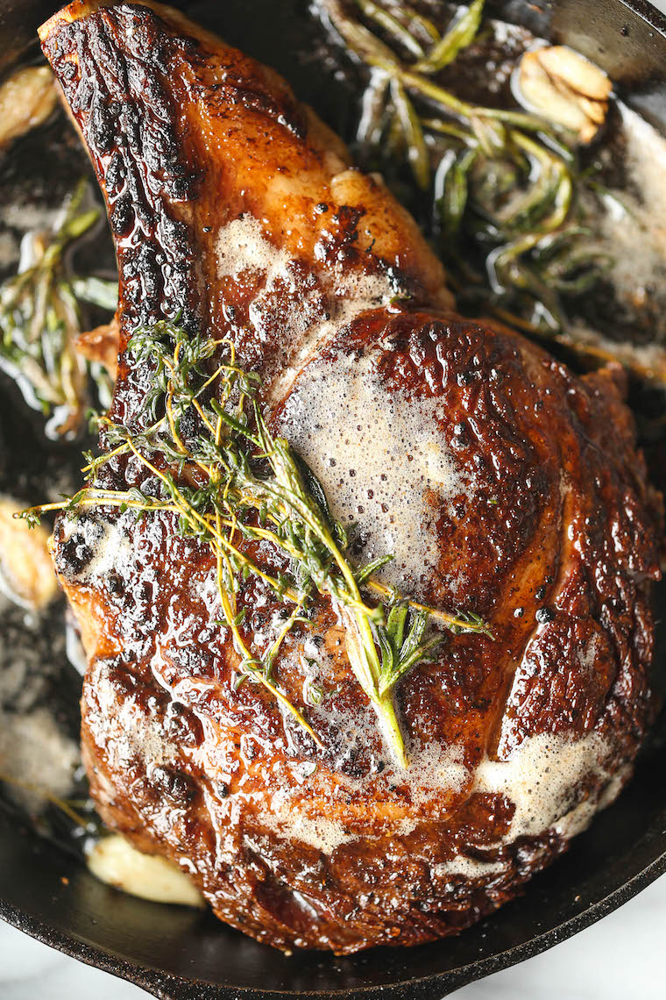

Ribeye Steak

Description
A juicy thick-cut ribeye steak seared with fresh thyme and basted with butter.
Ingredients:
- 10 ounce ribeye steak
- 4 ounces of fresh thyme
- 2 table spoons of unsalted butter
- 3 fresh garlic cloves
- Salt & pepper
Steps:
- Peel and dice the fresh garlic.
- Generously season the steak with salt, pepper and half of the garlic.
- Heat and spread a drizzle of olive oil in a seasoned cast iron skillet on medium heat.
- Add fresh thyme and garlic.
- When steaming, place the steak in the pan and sear for three to four minutes.
- Flip the seak and continue to sear. Add two tablespoons of butter and melt.
- Baste the steak with butter and season with salt and pepper.
- Remove steak after approaching desired temperature and let rest.
- Allow five minutes for the steak to rest before slicing.
- Serve with mashed potatoes and asparagus.